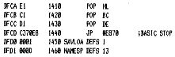
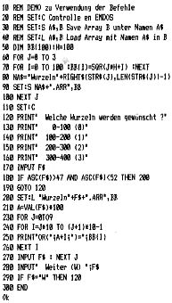
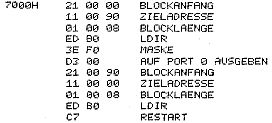

80-Bus Journal |
Juli/Aug./September 1984 · Ausgabe 3 |


Nach anfaenglichen Schwierigkeiten laufen nun 2 BASF 6106 Laufwerke an meinem Nascom 2 zur vollsten Zufriedenheit. Zunaechst hatte ich Aerger mit meinem Speicher (64kb statisch) der sich dann aber recht einfach loesen lies.Dann kam das Problem mit der Monitorumschaltung. Das Betriebssystem steht bei mir in einem EPROM vom Typ 2716 und wird jetzt in einem ebenfalls statischen Speicher vom Typ 6116 copiert. Der 6116 steckt in einem freien ROM/EPROM-Sockel des Nascom 2,die eigentlich nur fuer 1kb Speichertypen vorgesehen sind. Durch das dazulegen von Adresse 10 lassen sich aber auch 2kb Typen verwenden. Die Umschaltung von EPROM auf RAM erfolgt durch einen 74LS74 der von Port 0 angesprochen wird. Das Signal von Pin 6 des 74LS74 wird mit dem „MROM“-Signal verknotet und ergibt so „CS“ fuer den 6116. Pin 5 des 74LS74 wird mit dem herausgebogenem Pin 18 (CS) des 2716 verbunden. Nachfolgend die kurze copier-routine, die bei mir auf Adresse 7000h steht.
Es ist unbedingt erforderlich IC 45 des Nascom 2 zu entfernen und durch Drahtbruecken zu ersetzen,da dieser Buffer bei Zugriff auf Adresse 0000h bis 0800h von dem PROM N2MD (IC 47) nur in Leserichtung geschaltet wird. Selbstverstaendlich kann man auch das „DIR“Singnal an Pin 11 des IC 45 abnehmen, einmal invertieren und mit beiden Signalen auf ein „Oder“-Gatter legen, sodas dann der Buffer in jedem Falle durchschaltet
Nun blieb nur noch die Erzeugung des IOEXT-Signals uebrig was sich durch die Vorschlaege aus Heft 1/84 des 80-Bus Jornals als recht einfach ergab.Bei meinem Rechner kam der Vorschlag von Klaus Flockau zur Anwendung, bei dem die Decodierung mit einem 74LS32 geschieht. Bleibt noch zu bemerken das ich oefters Schwierigkeiten mit der PIO hatte, die sich nicht immer ruecksetzen lies.RESET und M1 mit einem Und-Gatter verknotet und dann auf M1 (Pin 37)der PIO legen, beseitigen dieses Uebel. Seither laeuft alles zur Zufriedenheit bei 2 MHz, wie auch bei 4 MHz. Ein Dankeschoen moechte ich noch an alle Autoren richten , die mit ihren Textbeitraegen und Informationen zum gelingen dieser Karte beigetragen haben.
| Seite 45 von 52 |
|---|